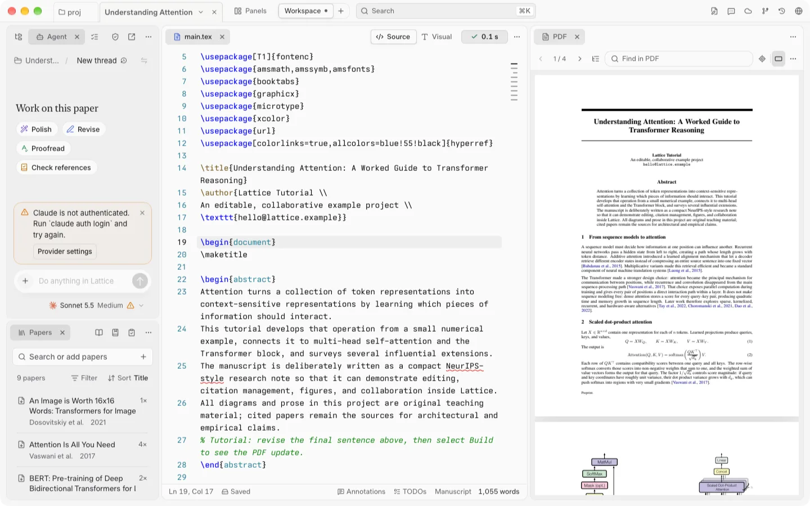

Troubleshooting and FAQ
Something went wrong
The build fails and I don't see why. Read the first problem in the build card; later ones often follow from it. Open Log for LaTeX's own words. Then try Clean rebuild from the command palette (⌘K), or ⇧-click the build button. See Building.
"Missing LaTeX dependency" or a package not found. BasicTeX doesn't include every package Overleaf has. Use the problem's Install button, or Settings › TeX doctor › Install required tools.
A build can't find LaTeX at all. Open Settings › TeX doctor. If it lists missing tools, install TeX from the Get started checklist or from MacTeX, then reopen the project.
A document builds only with Hide auxiliary files off. Some packages (minted 2.x, for example) ignore TeX's output directory. Lattice builds such a document beside itself on its own; if it still fails, turn off Settings › Editor & builds › Hide auxiliary files. See Auxiliary files.
A Typst document doesn't build. Open Settings › Editor & builds › Typst support: if it isn't installed, choose Download; if a download failed or an update left it behind, Download again. See Typst documents.
Adding papers or looking up citations doesn't work. These need the small uv tool. Settings › TeX doctor shows whether uv and uvx are there; Install required tools installs them.
The Agent says it isn't signed in. The panel shows which provider is missing a sign-in, for example "Claude is not authenticated". Sign in once in Terminal (claude auth login for Claude Code), then try again, or pick another provider under Settings › Agent › Providers.

Overleaf stopped syncing. Open Settings › Overleaf. If your session expired, choose Reconnect to Overleaf; if syncing is paused, Resume syncing. A file with conflict markers pauses sync for that file until you choose Keep mine, Keep theirs or Keep both on each marked spot.
A panel is gone. Panels › Reset layout brings every panel back. To undo a deleted workspace, use Undo in the notice right away.
I lost text. Open History: every save, every Agent edit and every Overleaf change is there, and Restore this file puts a file back.
Something else is wrong. Help › Report a Problem… saves a redacted log you can attach to an issue, and opens GitHub Issues. Settings › Logs shows the log in the app, with Export….
FAQ
Where is my paper stored? In the folder you opened or created, as ordinary files. Lattice keeps what it adds (build files when you hide them, Overleaf conflict copies and the like) in the project's hidden .research folder and in its own app data, never in your .tex files.
Do I need an AI subscription? Only for the Agent and the proofreading tools. Everything else, including builds, citations, history and Overleaf sync, works without one. See The Agent.
Do my co-authors need Lattice? No. They keep working on Overleaf; see Overleaf sync.
Can I go back to the classic app on my Mac? No. Since 0.20.0 every Mac runs the native app; the classic app's data stays on your Mac, untouched. See The native Lattice.
I use Windows or Linux. Those builds are experimental and still run the classic app, which has no Agent. Most of this guide applies, but labels and menus differ in places.
Does Lattice work offline? Yes, except for what needs the network: Overleaf sync, the Agent with a hosted model, looking up papers, the plugin and theme markets, and first-time downloads such as Typst support and Typst packages. On a Mac, when the website can't be reached, Help › User Guide opens the copy of this guide that comes with Lattice.